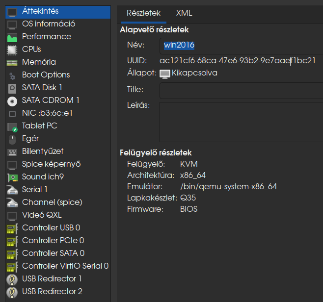
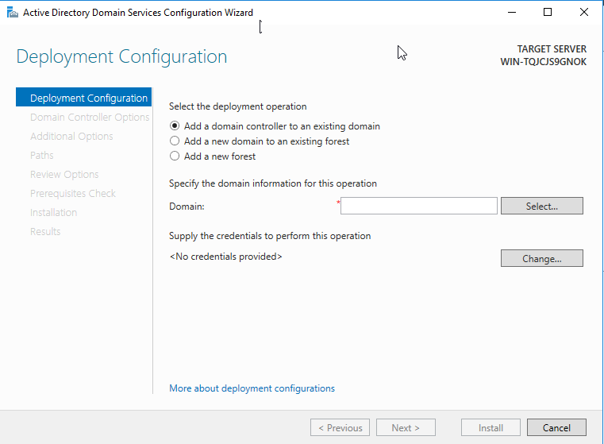
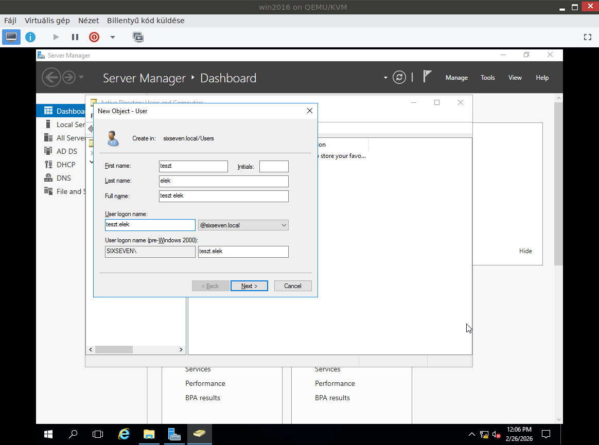
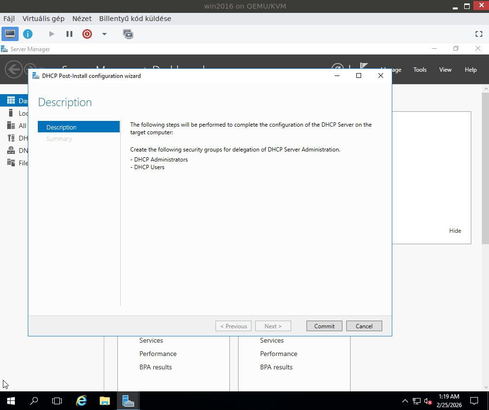

A szakmai gyakorlat során a számítógépes rendszerüzemeltetés területén mélyebb ismereteket szereztem a szerveroldali infrastruktúra kiépítése terén. Virtuális környezetben, a QEMU/KVM virt-manager segítségével telepítettem és konfiguráltam a Windows Server 2016 operációs rendszert, majd arra egy teljes értékű Active Directory tartományvezérlőt építettem. Ennek részeként beállítottam a DHCP-szolgáltatást az ügyfelek dinamikus IP-címzéséhez, valamint a DNS-szolgáltatást a tartományon belüli névfeloldás biztosításához. Gyakorlatot szereztem felhasználók és csoportok létrehozásában, csoportházirendek (GPO) alkalmazásában, valamint a szerver alapvető biztonsági és hálózati paramétereinek beállításában. A munka során kiemelt figyelmet fordítottam a dokumentációra és a hibakeresési folyamatok megértésére is.



